Papelería Matrix
Cómo usar el sistema: la página para los clientes, el panel de la administradora, la caja de ventas del cibercafé y la aplicación para el teléfono.
Versión 2.0 · 26 de noviembre de 2026
Equipo: Osvaldo De Jesús Pacheco Sanabria y Adrián Orozco
Dirección del sistema: https://papeleria-matrix-web.onrender.com
Aplicación para el teléfono: https://matrix-movil.vercel.app
El sistema de Papelería Matrix tiene cuatro partes:
| Quién | Qué puede hacer |
|---|---|
| Cliente (sin entrar) | Ver el catálogo y los destacados, buscar, leer los datos de la tienda y los términos. |
| Operador del cibercafé | Vender, ver sus ventas, cambiarlas o anularlas con su clave de permiso, enviar el registro en PDF o por correo y anotar las existencias. |
| Administradora | Todo: el panel completo, las ventas de todos sin necesitar clave, las cuentas, los historiales y los reportes. |
Se abre con la dirección del sistema. Arriba está el menú (Inicio, Nosotros, Servicios, Papelería, Pulguero Glam y Contacto), la lupa para buscar en todo el catálogo y el botón Iniciar sesión, que es solo para el personal del negocio.
Mientras no se está buscando nada, la página muestra en Destacados lo que la administradora marcó con una estrella. Al escribir en un buscador, los destacados se ocultan para dejar ver los resultados. También aparecen al abrir la lupa. Lo agotado o ya vendido no se destaca.
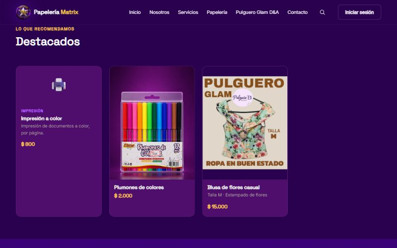
Los productos agotados y las prendas ya vendidas aparecen marcados. Los precios son los mismos que la administradora pone en el panel. En «Horarios de atención» aparece lo que ella guarde en «Datos de la tienda»; si publica un dato de horario, se muestra el suyo en lugar del que trae la página.
Para salir, toca Salir arriba a la derecha, junto a tu nombre. Hazlo siempre que dejes el computador.
Si desde el panel tocas Ver la página de clientes, arriba ya no aparece «Iniciar sesión» sino Volver al panel (o «Volver a la caja» para el operador) y Cerrar sesión.
Por seguridad, si pasan 15 minutos sin usar el sistema, la sesión se cierra sola. Al volver verás este aviso: solo tienes que entrar otra vez. Lo que ya estaba guardado no se pierde.

Al entrar, el panel saluda y muestra un mosaico por cada parte del negocio, con cuántos registros hay en cada una. Toca un mosaico para abrir esa sección.
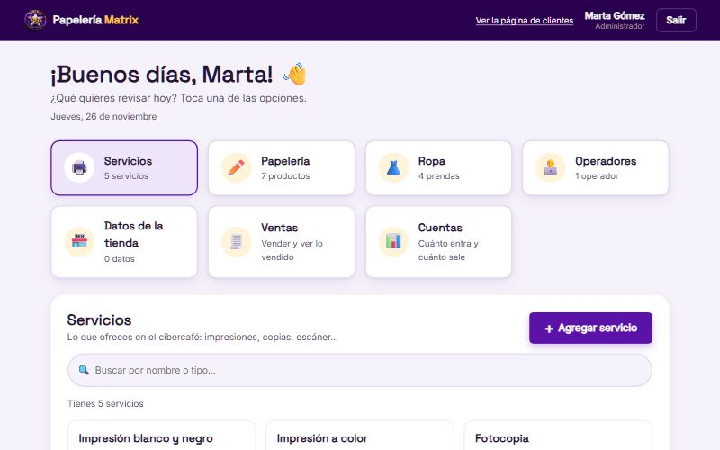
Las tres secciones funcionan igual. Cada artículo aparece en una tarjeta con su precio. En papelería, además, se ve cuántas unidades quedan: en verde si hay suficientes y en rojo cuando quedan menos de 5 o se agotó.
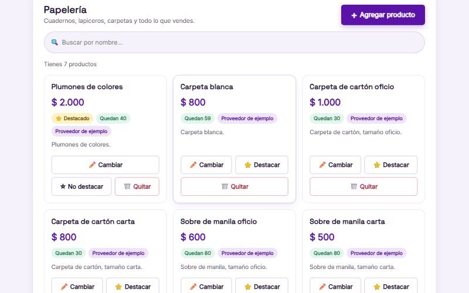
1500 o 1.500.Arriba del formulario está el recuadro Foto. Toca Elegir foto y escoge una imagen, o tómala con la cámara si estás en el celular. Con Cambiar foto pones otra y con Quitar foto la quitas. La foto se achica sola y, al guardar, aparece en el panel, en la caja y en la página.
Toca Cambiar en la tarjeta. Se abre el formulario con los datos actuales. Cambia lo que necesites y toca Guardar. Si no cambiaste nada, el sistema te lo dice.

Toca ⭐ Destacar para que el artículo salga en la sección «Destacados» de la página. Con ☆ No destacar lo sacas de ahí.
Toca Quitar, escribe si quieres el motivo y confirma. El artículo deja de verse en el panel, en la caja y en la página, y ya no se puede vender. No se borra: queda guardado y las ventas anteriores lo siguen mostrando.
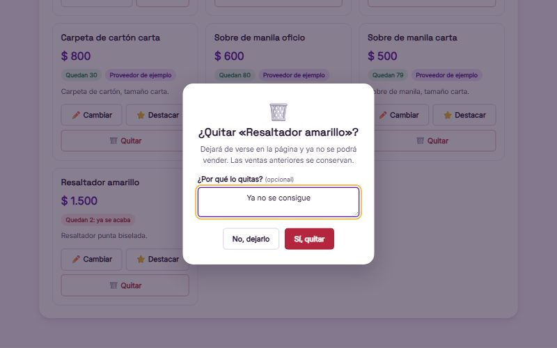
Cada prenda de Pulguero Glam es única. Cuando se vende aparece como Vendida y no se puede volver a vender. Si se anula la venta, la prenda vuelve a estar disponible.
Aquí están las personas que atienden el cibercafé. Cada una entra con su propio usuario y sus ventas quedan a su nombre.

daniel.perez), una contraseña de al menos 10 caracteres, sueldo, fecha de inicio y dirección.| Estado | Qué significa | Cómo se cambia |
|---|---|---|
| Activo | Puede entrar y vender. | Es el estado de quien se agrega. «Reactivar» o «Volver a contratar» lo devuelven. |
| Suspendido | No puede entrar por un tiempo. | Botón «Suspender». |
| Despedido | Salió del equipo. No puede entrar. | Botón «Retirar». |
Arriba de las tarjetas puedes ver En el equipo, Activos, Suspendidos o Despedidos. Si la persona tenía la sesión abierta, se le cierra. Sus datos y sus ventas se conservan.
Guarda la información del negocio: horario, dirección, medios de pago, servicio a domicilio, etc. Lo que guardes aparece en la página de los clientes. Cada dato tiene un nombre corto (entre 10 y 15 letras, por ejemplo «Horario tienda»), el texto y el puesto en el que aparece. Con Quitar deja de verse, pero queda guardado.

La caja se abre al entrar como operador, o desde el mosaico Ventas del panel.
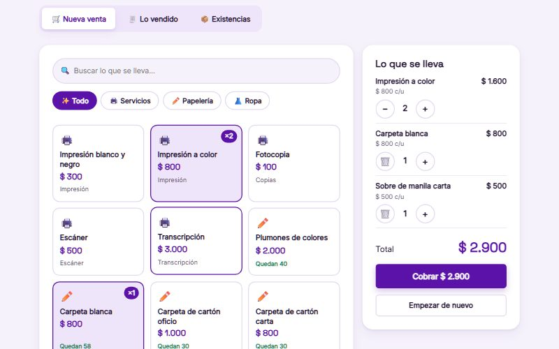
El sistema no deja agregar más unidades de las que hay. Si el producto se agotó o la prenda ya se vendió, su botón aparece apagado. Si dos personas venden la última unidad al mismo tiempo, solo una venta pasa y a la otra le avisa cuántas quedan.
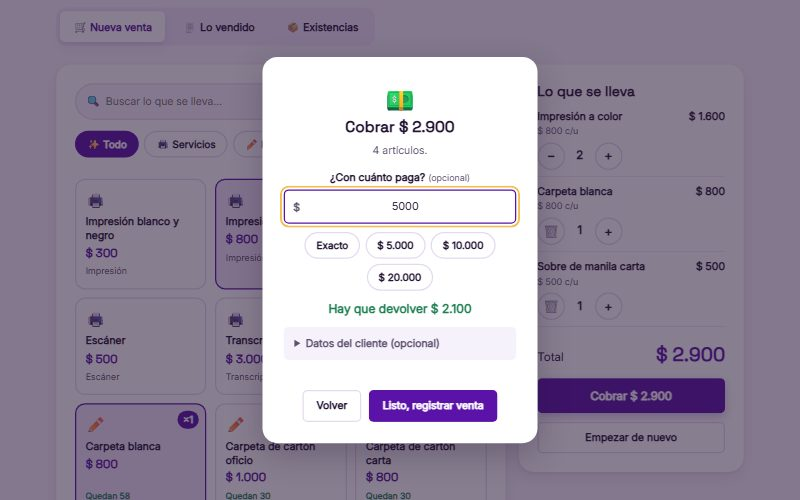
Aparece el recibo con lo vendido, el total, el cambio y el número de factura. Desde ahí puedes tocar Descargar PDF o Enviar por correo. Toca Nueva venta para atender al siguiente cliente.

Escribe el correo del cliente y toca Enviar. Si el envío automático no está activado, aparece Abrir mi correo: se abre tu programa de correo con el mensaje ya escrito y solo tienes que enviarlo.
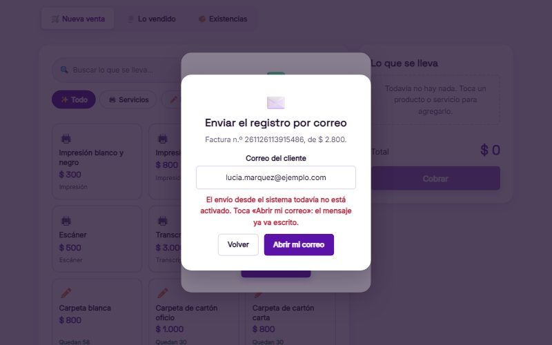
En la pestaña Lo vendido se ve el total, el número de ventas y el promedio de hoy, de los últimos 7 días, de los últimos 30 días o de todo. El operador solo ve sus ventas; la administradora ve todas y quién vendió cada una.

Puedes buscar por número de factura, artículo o quién vendió, y ver Todas, Con servicios o Anuladas. Cada venta tiene los botones PDF, Correo, Cambiar venta y Anular venta.
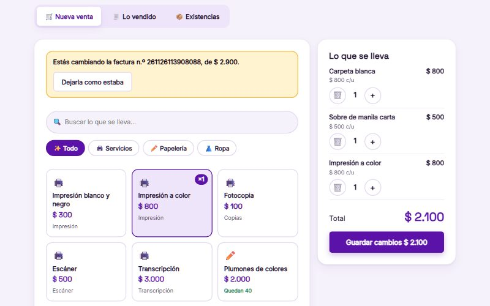
La factura conserva su número y su fecha, las existencias se ajustan y el total se calcula con los precios de ahora. Con Dejarla como estaba no se cambia nada.
Toca Anular venta y confirma (el operador, con su clave). La venta queda marcada como Anulada, las unidades vuelven a la tienda y deja de contar en las cuentas. Esto no se puede deshacer.
En la pestaña Existencias el operador o la administradora anotan cuántas unidades de papelería hay en la tienda. Busca el producto, toca Cambiar cantidad, escribe lo que contaste y guarda. Si mientras contabas se vendió algo, el sistema avisa para que revises el número.
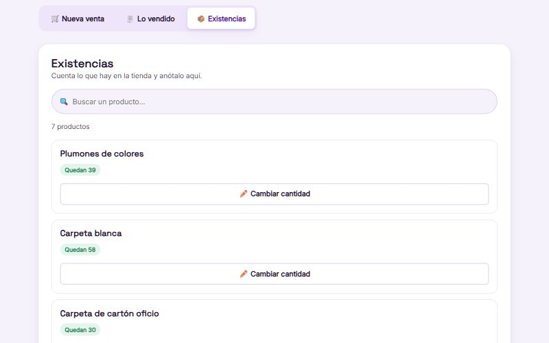
Solo la administradora. Elige el periodo (este mes, mes pasado, últimos 7 días, hoy o todo) y el sistema muestra:
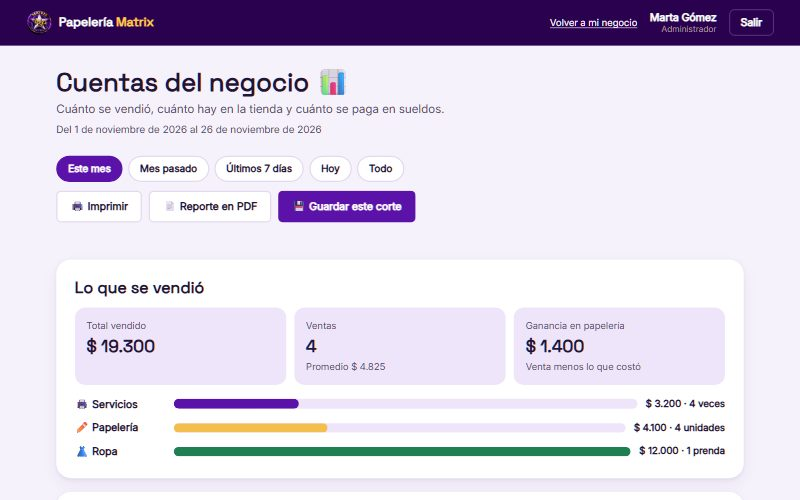

Imprimir saca las cuentas en papel o en PDF, sin botones.
Todas las pantallas de la página se acomodan al celular. En la caja, el total y el botón Cobrar quedan siempre abajo; toca «ver» para revisar lo que se lleva el cliente.

Abre https://matrix-movil.vercel.app y entra con el mismo usuario y contraseña. Para tenerla como una aplicación:
Sirve para vender, ver lo vendido, cambiar y anular ventas, y consultar el catálogo; la administradora también puede agregar, cambiar y quitar artículos. Los destacados, el PDF, el correo, las existencias, los historiales y los reportes se manejan desde la página.
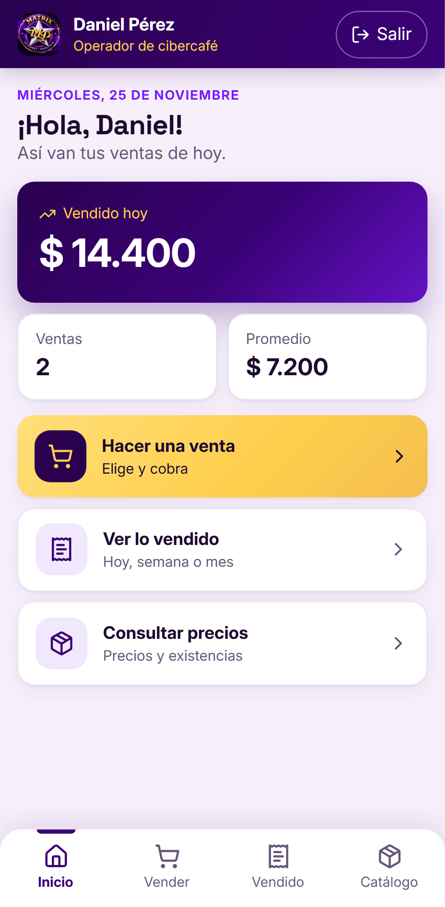
| Pregunta | Respuesta |
|---|---|
| Dice «No pudimos conectar con el sistema». | Revisa el internet y toca «Intentar de nuevo». Si es la primera vez del día, espera un minuto a que el servidor despierte. |
| Me sacó del sistema. | Pasaron 15 minutos sin usarlo. Entra otra vez; no se pierde nada de lo guardado. |
| Dice que mi usuario está suspendido. | Habla con la administradora. Ella lo reactiva desde «Operadores». |
| No me deja vender más de un producto. | No quedan más unidades. Cuenta lo que hay y anótalo en «Existencias». |
| Me equivoqué en una venta. | En «Lo vendido» toca «Cambiar venta» o «Anular venta». El operador necesita su clave de permiso. |
| No tengo clave de permiso. | La administradora la pone en «Operadores», con el botón «Poner clave». |
| Un operador olvidó su contraseña. | La administradora toca «Cambiar» en su tarjeta y escribe una contraseña nueva. |
| Quité un artículo por error. | No se recupera desde el panel. Agrégalo otra vez con un código distinto. |
| El correo no se envía solo. | Toca «Abrir mi correo» y envía el mensaje desde tu programa de correo. |